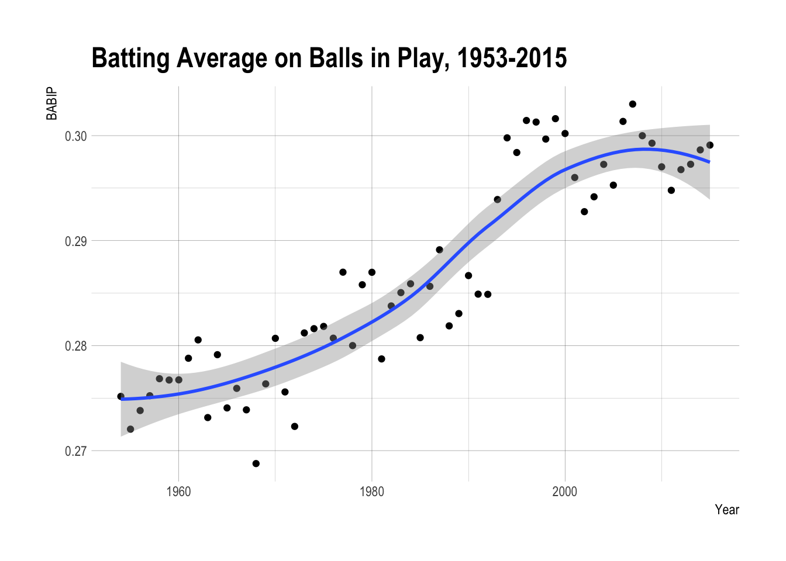

The podcast I listen to said something like, “I bet Justin Smoak must have one of the lowest BABIPs of anyone to this point in his career.” I thought it might be a good chance to explore this nebulous BABIP a little, what are the historical league and career trends in BABIP. Maybe 3 sentences are needed.
Or maybe a second paragraph. Or 2.
library(Lahman)
library(dplyr)##
## Attaching package: 'dplyr'## The following objects are masked from 'package:stats':
##
## filter, lag## The following objects are masked from 'package:base':
##
## intersect, setdiff, setequal, unionlibrary(ggplot2)
library(hrbrthemes)BABIP is calculated as balls in play (hits minus home runs) divided by total at bats that caused these balls in play (at bats minus strikeouts minus home runs plus sacrifice flies). Note that walks aren’t included because they don’t count against AB and the ball wasn’t put in play.
\[ BABP = {{H - HR} \over AB - K - HR + SF}\]
As part of the exploration I discovered that there were some missing categories for years before 1954. I would assume these were sac flies since the others seem pretty straightforward.
data("Batting")
Batting %>% group_by(yearID) %>% summarize(sum(H), sum(HR), sum(AB), sum(SO), sum(SF)) %>%
filter(yearID > 1948 & yearID < 1958)## # A tibble: 9 × 6
## yearID `sum(H)` `sum(HR)` `sum(AB)` `sum(SO)` `sum(SF)`
## <int> <int> <int> <int> <int> <int>
## 1 1949 22168 1704 84380 8951 NA
## 2 1950 22559 2073 84823 9554 NA
## 3 1951 22191 1863 85065 9335 NA
## 4 1952 21272 1701 84195 10380 NA
## 5 1953 22459 2076 84997 10213 NA
## 6 1954 21908 1937 83936 10215 795
## 7 1955 21610 2224 83590 10803 698
## 8 1956 21653 2294 83856 11505 644
## 9 1957 21865 2202 84906 11948 687I charted the league BABIP for all years since 1954 and came up with the figure below. It seems that BABIP has been going up a little and has recently been around .295-.300.
Batting %>% group_by(yearID) %>%
# I think I needed all these na.rm because of pitchers who didn't have any ABs their whole career
summarize(BABIP = (sum(H, na.rm = T) - sum(HR, na.rm = T))/
(sum(AB, na.rm = T) - sum(SO, na.rm = T) - sum(HR, na.rm = T) + sum(SF, na.rm = T))) %>%
filter(yearID>1953) %>%
ggplot(aes(x = yearID, y = BABIP)) + geom_point() + geom_smooth(method = "loess") +
labs(title = "Batting Average on Balls in Play, 1953-2015",
x = "Year",
y = "BABIP") +
theme_ipsum()
Let’s break down the announcer’s statement. What is Smoak’s BABIP? First I determined his playerID then calculated his games played and his BABIP.
data("Master")
Master %>% filter(nameLast == "Smoak") %>% select(playerID, birthYear, birthMonth, birthDay, nameFirst, nameLast)## playerID birthYear birthMonth birthDay nameFirst nameLast
## 1 smoakju01 1986 12 5 Justin SmoakHere are the by year BABIP numbers.
Batting %>% filter(playerID == "smoakju01") %>%
mutate(BABIP = (H - HR) / (AB - HR - SO + SF)) %>%
select(yearID, AB, BABIP)## yearID AB BABIP
## 1 2010 235 0.2383721
## 2 2010 113 0.2933333
## 3 2011 427 0.2733119
## 4 2012 483 0.2422535
## 5 2013 454 0.2784810
## 6 2014 248 0.2429379
## 7 2015 296 0.2538860And the total career to 2015.
Batting %>% filter(playerID == "smoakju01") %>%
select(H, HR, AB, SO, SF) %>% summarize_all(sum) %>%
mutate(BABIP = (H - HR) / (AB - HR - SO + SF))## H HR AB SO SF BABIP
## 1 506 92 2256 578 13 0.2589118This is quite a bit lower than the BABIP in those years (again around .300). Smoak is a first baseman but not a particularly portly one, so I’m not sure that it should be that low.
Smoak has played for about 6 years. How do I filter players from around the same time who have played at least 6 years and calculate their BABIP to that first 6 years? Or maybe it might be easier by cumulative AB.
Batting %>% filter(yearID > 1953) %>%
group_by(playerID) %>%
mutate(totalAB = sum(AB), cumAB = cumsum(AB)) %>%
filter(totalAB >= 2256 & cumAB <3000) %>% select(playerID, yearID, H, AB, HR, SO, SF, totalAB, cumAB) %>%
group_by(playerID) %>% summarize(totH = sum(H), totAB = sum(AB), totHR = sum(HR), totSO = sum(SO), totSF = sum(SF)) %>%
mutate(BABIP = (totH - totHR) / (totAB - totHR - totSO + totSF)) %>% arrange(BABIP)## # A tibble: 1,302 × 7
## playerID totH totAB totHR totSO totSF BABIP
## <chr> <int> <int> <int> <int> <int> <dbl>
## 1 crandde01 636 2542 117 266 24 0.2377462
## 2 hernaen01 522 2327 2 151 8 0.2383135
## 3 grosswa01 676 2906 110 448 24 0.2386172
## 4 duncada01 617 2885 109 677 18 0.2399622
## 5 kingji01 699 2918 117 401 22 0.2402973
## 6 nettlgr01 623 2560 105 326 15 0.2416045
## 7 blefacu01 699 2947 112 444 25 0.2429636
## 8 martibu01 618 2743 58 419 35 0.2433724
## 9 mcgwima01 647 2656 178 592 37 0.2438898
## 10 brinked01 551 2644 28 490 14 0.2443925
## # ... with 1,292 more rows# %>%
# filter(playerID == "aaronha01")Other data: BABIP by position BABIP by year of career BABIP by age